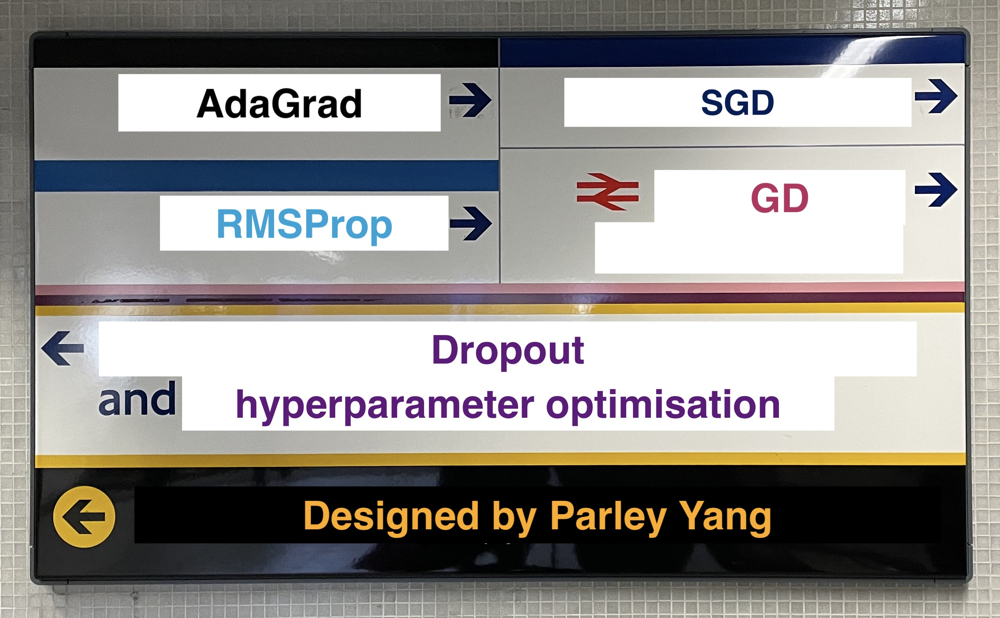

Happy Deep Learning
ST456 @ LSE
LT 2022
Logistics
-
-
Upcoming Office Hours:
- 11am-12pm on Friday, 18th Feb (ON-LINE)
- 11am-12pm on Friday, 4th Mar
Please use Slack channel to book
Default location: COL 1.06
Interesting Pictures
- Week 4:
